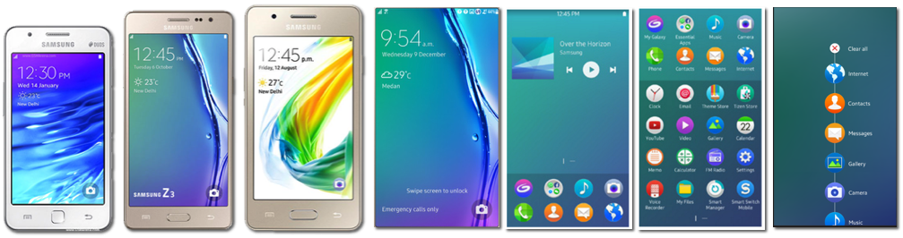
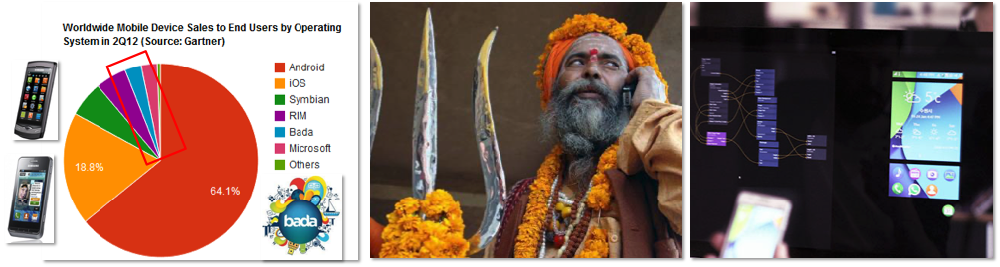
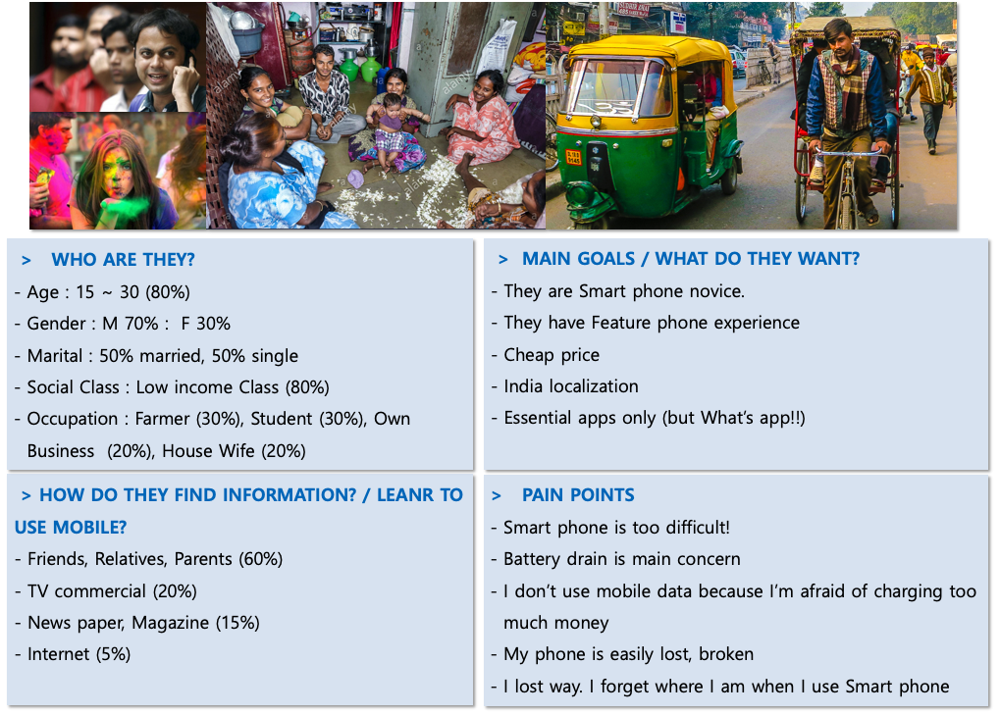
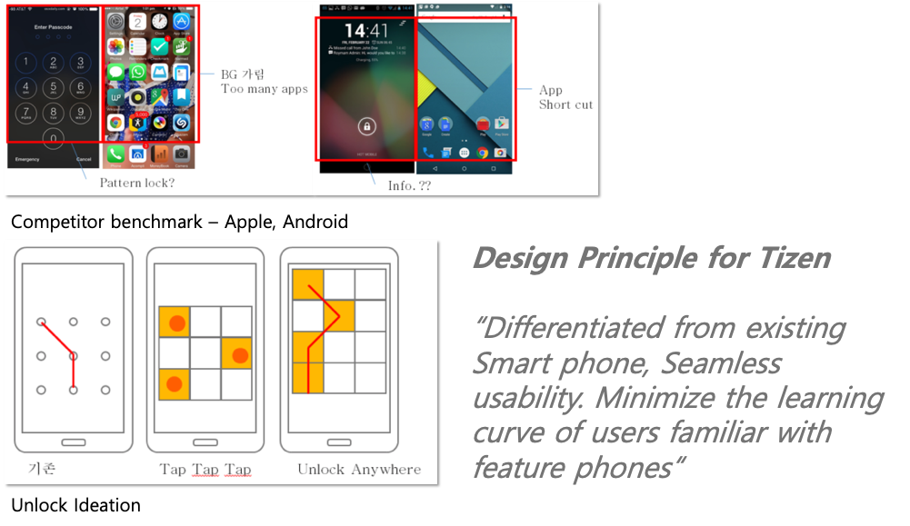
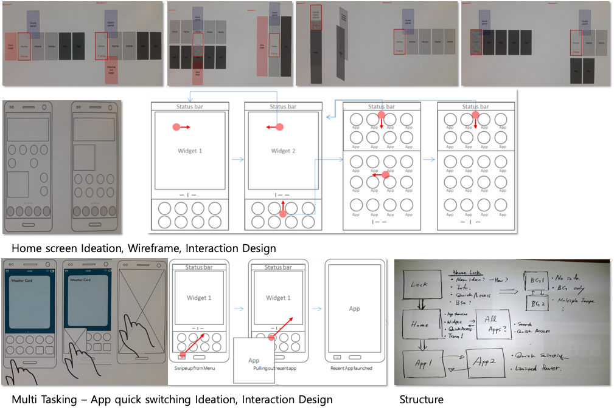
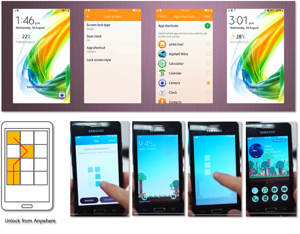
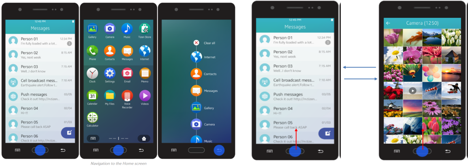

Introduce

Nov. 2013 ~ Apr. 2015
PLATFORM:Tizen, Mobile
Description
Tizen is a project that has long been prepared to have an independent platform for Samsung.
Z1, Z3, and Z2 models are launched until 2017, and Tizen UX is easier for smart phone novice users to use than Android and iOS UX.
In particular, Core UX of Home - Lock - Multi Tasking improves the pain points of existing iOS and Android mobile UX, and provides seamless UX no learning curve is required.
Role: UX-UI (Tizen core UX: Home, Lock, Multi Tasking, UX strategy, Research, Z1 promotion Video scenario
Background

Since starting the Tizen platform work in 2010, Tizen team has attempted to launch Tizen Mobile in the high end market. However, until 2013, the launch of the Tizen Mobile platform has been delayed due to difficult market conditions and technical immaturity. So Tizen team decided to change the existing premium strategy to target the low end market.
The newly selected Target market was India and South East Asia. For the new UX design suitable for the market, a designer who knows low end market very well needs to be participated. At that time, I had been working as an UX designer in India for 8 month, so I was selected for the New Tizen project. I was responsible for establishing overall UX strategy and establishing Core UX in the Tizen low end market project.
The market in India is still low penetration rate of Smart phone. Our goal was to provide Easy UX so that existing Feature phone users can move to Smart phone without difficulty. At the same time, supplying localized contents, apps, and providing localized GUIs was also a big challenge.
Especially Tizen team more focused on to make easy and intuitive UX for Home, Lock, and Multi Tasking since they are the most frequently used area so that smart phone novices are able to use seamlessly without feeling resistance.
Project Goals
Overall
: Unlock – checking Widget information – Main App access – App switching
>> Allows this tasks to run seamlessly.
Home
Pain points: Android > Home screen and All Apps are separated, so app and app shortcut exist at the same time. This causes user difficult to understand the difference of app and app shortcut.
: iOS > Many apps are shown at once and it cover the background image, this make home screen looks ugly and make it difficult to access major apps.
>> Resolve these pain points and provide Tizen unique user experience
Lock
>>Quick access to key information, background image viewing, perform major functions without unlock
>> Make Tizen unique unlock method.
Multitasking
>> UX for low-cost model optimized, tast task switching
Target User
I selected South East Asia - especially India as the target market and set up the local consumers as persona. Based on existing user research data analysis, desk research, and insight through Indian local interview, we have derived the above persona.
UX progress 1
Core UXs can not be designed independently because Lock, Home, and Multi Tasking scenarios must be consistently configured and constantly connected. I set up one principle that encompasses the whole, and designed the Detail scenario according to the principles.

UX progress 2
Overall

Unlock –> Home –> App launching –> App switching
User can perform this basic process seamlessly.
Up / Down Swipe Gesture provides an intuitive UX to access to All Apps screen and Notification panel respectively, making it easy to use without having to user learning.
Home

By restricting app placement on the Home Screen, Tizen provides a cool look & feel overall. Tizen uses transparent image to prevent the background image from being blocked as much as possible, and if necessary, it is possible to configure only simple background by removing the widget of Home area.
> Understandable and evident
Tizen has clearly distinguished the App area and the Information area so that the overall structure of the system can be understood easily. App and Widget are clearly distinguished so that users can easily navigate to run their own apps and prevent users from mistakenly finding their way during use.
> Welcoming and manageable
Tizen home is easy to use as soon as user starts. If user becomes familiar with UX, user can also customize their home screen, however, to help novice users to understand the emphasis on this advanced features are minimized.
> Focused on app launching
What Tizen home does most is the Gate way role for running apps. At the same time, I am committed to providing information through Widget.
At the bottom of Home, 8 main apps were placed to improve accessibility. The reason for limiting to 8 apps is because most of the users are analyzed to use less than 8 apps by user survey.
Lock screen
https://youtu.be/JUnoMc6H1Xk?t=195
Tizen Lock tried to show the user a cool look by avoiding unnecessary information display. Another goal was to provide users with a new pattern lock that is different from Android.
> Minimize redundant info. Maximize visibility of Background Image
Tizen placed the important information in the optimal position and made it a cool look. Especially for the users in India, they often put their favorite images such as family photos in the background image, so Tizen tried to avoid to block those images.
> Invisible Unlock – Unlock from anywhere
Indians with a lot of outdoor activities had a need for the ability to immediately unlock without looking at the phone. Invisible Unlock UX has been applied so that users do not need to watch the screen when unlocking.
This is one of the Tizen mobile signature functions that is faithful to local needs.
Multitasking
> Simple yet intuitive Multitasking
For Feature phone users, it was determined that providing an intuitive Menu key would be a higher priority. Thus, unlike Android phone, Tizen mobile has assigned the bottom left H/W key as Menu key in order to guarantee the usability of the Feature phone user.
Tizen assigned Home key press and hold to Multi tasking operation and provided a simple application execution list due to computing power constraint.
> Pervious App Shortcut
In order to compensate for the concept of Home key long press, which has relatively slow reaction speed, Tizen introduced quick app switching function through swipe operation. Swipe up action at the bottom to quickly switch to the previous application, which ensures fast multi tasking of most users.